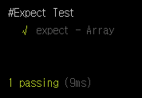
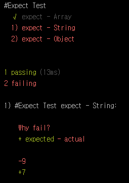

Mocha Tutorial - Step 02. Chai
Step 01: Hello World!에서는 기본적인 Mocha 사용법에 대해 알아보았다.
이번 Step 02에서는 Step 01: Hello World!에서 언급한 Assertion library에 대해 어떻게 사용하는지와 어떤 것인지를 알아보도록 하자.
Chai
{kind=link}
mochjs.org에서 리스팅 된 Assertion에는 Should.js, expect.js, Chai, better-assert, unexpected 가 있다. 이 중 어떤 Assertion를 사용하는지는 사용자의 판단에 있다. 궁극적으로는 같은 목적을 가지기 때문에 어떤 스타일을 선호하냐는 것에 따라 나뉠 수 있다.
대게 Mocha는 Chai와 같이 사용되며, NPM COMAPRE를 참고로 보았을 때도 Chai가 다른 Assertion 보다 선호하는 것을 볼 수 있다.
먼저 Chai는 Node.js 기반의 Assertion library로 BDD와 TDD 스타일을 지원하고 있으며, 지원하는 아래와 같은 인터페이스를 지원한다.
Should
Expect
Assert
Chai 설치하기
먼저 npm을 통해 Chai를 설치해보자.
1 | $ npm i chai --save-dev |
매우 쉽다. :)
너무 간단해서 Chai 설치하기. 란 부제를 지워버리고 싶을 정도지만 그래도 Tutorial이니 삭제하지는 않겠다.
Chai 사용하기.
우리는 이제 Chai까지 설치를 하였다. 이렇게 설치한 Chai를 불러와서 사용하기만 하면 된다. Step 01: Hello World!에서 이미 test.js파일을 생성했으니 새롭게 test-chai.js라는 파일을 생성해보자. 아니면 그대로 사용해도 된다. 그리고 아래처럼 코드를 입력해보자.
1 | var chai = require('chai'); |
require를 통해 Chai 모듈을 사용하기로 한다. 그런데 그 아래를 보니 expect, assert, should가 체이닝을 통해 불러왔다. 위에서 먼저 설명을 했지만 Chai는 이 스타일들을 지원하기 때문에 사용할 수가 있는 것이다. 굳이 저 3개를 모두 사용할 필요는 없다. 어떤 것을 사용해야 하는지 모르겠다면 각각의 API를 보고 마음에 드는 것을 사용하기로 하자. 왜냐하면 Assertion이기 때문이다. (내 생각..)
이제 테스트 스위트를 작성해보자.
expect
1 | var chai = require('chai'); |
간단하다. 바로 실행해 보자.
1 | $ mocha test-chai.js |

정상적으로 출력이 되는 것을 확인할 수 있다.
위 예제는 expect를 사용한 코드이다. expect는 BDD Style의 인터페이스이며, 자연어에 가까운 Assertion이다. 아직 감이 오지 않을 수도 있다. 다른 코드를 보고 감을 잡아보자.
위 코드에 이어서 코딩하면 된다.
1 | it('expect - String', function () { |
위 예제에서 주목할 만한 곳은 아래 코드이다.
1 | expect(str).to.have.lengthOf(7, 'Why fail?'); |
expect는 임의의 실패한 assertion 앞에 메시지를 포함할 수 있다. 예제를 실행해 보면 아래와 같이 실패한 결과에 메시지가 출력되는 것을 볼 수 있다.

처음 접할 때는 다소 생소할 수 있다. 하지만 걱정하지 않아도 된다. 잘 정리된 expect API가 있으니까 말이다.expect api에 리스팅 되어 있는 체이닝이다. 이 체이닝은 뒤에 있을 should에서도 같은 방식을 사용하고 있다.
- to
- be
- been
- that
- which
- and
- has
- have
- with
- at
- of
- same
- but
- does
코드에 대한 설명은 주석을 참고하자!.
should
위에서 언급했지만 should는 expect와 같은 체이닝 방식을 사용한다. should는 IE와 사용할 때 몇 가지의 문제가 있으므로 브라우저 호환성을 알고 있어야 한다.
자, 그럼 이제 예제를 통해 should와 expect가 어떻게 같은 체이닝 방식을 사용하는지 확인해 보겠다. 새로운 테스트 스위트 #Should Test를 추가하겠다.
1 | describe('#Should Test', function () { |
결과는 expect와 같음을 알 수 있다. 두 코드를 비교해 보면 어느 부분이 다른지 명확하게 보인다. 거의 다른 부분이 없다. 그럼 expect와 should가 다른 점이 무엇일까?
expect와 should의 차이
우리가 처음 Chai를 설치하고 test-chai.js만들고 이렇게 코딩하였다.
1 | var chai = require('chai'); |
()가 있고 없고의 차이이다… 굳이 풀이하자면 이렇다.
expect는 함수에 대한 참조일 뿐이고 should는 함수가 실행되고 있음
Assert
assert는 Node.js에서 제공하는 assert의 표기법을 제공한다. 하지만 이 Chai의 assert가 좀 더 풍부한 표현을 제공하고 있다.assert는 간단한 예제만으로 넘어가도록 하겠다.
1 | describe('#Assert Test', function () { |
Mocha를 사용하다 보면 처음에 이 Assertion에 대해 다소 낯선 기분이 들 수도 있다. 하지만 걱정 할 필요가 없다. API에서 모든 것을 확인하고 테스트해 볼 수 있기 때문이다.
이제 Chai 사용법에 대해 알아 보았다. 기본적인 Mocha를 모두 터득한 것이다. 지금까지 배운 것만으로도 쉽지는 않겠지만 그럴싸한 단위 테스트를 진행할 수 있다.
다음 Tutorial에서는 Hooks와 Mocha에서 BDD, TDD의 다른점을 알아보겠다.